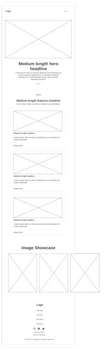

Site Purpose
This website introduces The Crochet Philippines Facebook group, a vibrant community of over 231,000 members. It will feature four pages: Home, About Us, Join Us/Contact, and a Color Palette Generator. The site will be responsive, visually appealing, and include interactive features.
Target Audience
Crochet enthusiasts, Filipino makers, and anyone interested in joining a supportive creative community.
Scenarios
- “How can I join The Crochet Philippines community?”
- “Where can I find inspiration or color combinations for my next crochet project?”
Color Scheme
Color Palette- Terra Cotta (#E25C50)
- Bistre (#3C2415)
- Desert Sand (#DCBFA7)
- Isabelline (#F9F4F0)
Typography
- Playfair Display - headers and titles
- Open Sans - body text
- Pacifico - accent font for logo, quotes, or decorative headings
Domain Name
Chosen domain: thecrochetphilippines.org - checked and available.
Wireframes
Wireframes created using Wireframe.cc.
Mobile View
 View Mobile View WireframeThe mobile wireframe features a stacked layout with a hero section, feature highlights, a gallery, and footer—optimized for readability and touch interaction.
Desktop View
View Desktop View WireframeThe desktop wireframe expands these sections horizontally, adding space for navigation, visual content, and community engagement.